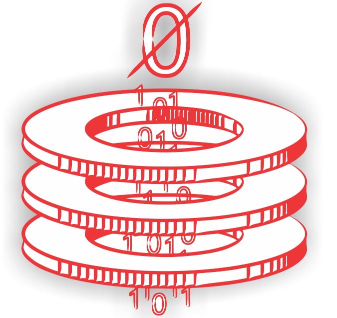

<!-- Topbar header - style you can find in pages.scss -->
<header class="topbar d-md-block">
  <nav class="navbar top-navbar navbar-expand-md ufps-navbar-dark">
    <div class="navbar-header">
      <a class="navbar-brand" routerLink="informacion">
        <span>
        </span> </a>
    </div>
    <div class="navbar-collapse ">
      <ul class="navbar-nav mr-auto ">
        <!-- This is  -->
        <li class="nav-item"> <a class="nav-link nav-toggler hidden-md-up waves-effect text-white" href="javascript:void(0)" >
          <i class="ti-menu"></i></a> </li>
        <li class="nav-item"> <a class="nav-link sidebartoggler hidden-sm-down waves-effect text-white" href="javascript:void(0)" style="padding-left: 28px">
          <i class="ti-menu"></i></a> </li>
        <li class="nav-item hidden-sm-down"></li>
      </ul>
      <ul class="navbar-nav mr-auto">
      </ul>
      <ul class="navbar-nav my-lg-0">
        <li class="nav-item dropdown ">
          <a (click)="logout()" class="nav-link dropdown-toggle waves-effect waves-dark text-white" href="" data-toggle="dropdown"
             aria-haspopup="true" aria-expanded="false"> <i  class="fa fa-user fa-lg"></i> Cerrar Sesion</a>
         </li>
        <div class="ufps-navbar-corporate">
          
        </div>
      </ul>
    </div>
  </nav>
</header>

